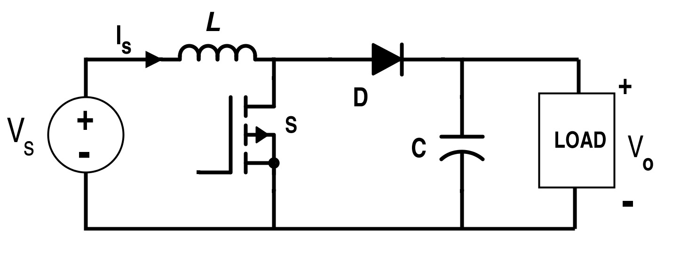

Boost-converter adalah konverter penaik tegangan DC ke level yang lebih tinggi. Ia merupakan bentuk power-supply yang diperlukan ketika tegangan yang dibutuhkan oleh suatu perangkat atau rangkaian elektronik lebih tinggi dari tegangan suplai yang tersedia. Sebagaimana buck-converter, boost-converter juga menerapkan sistem SMPS, maka ia adalah bagian dari jenis power-supply SMPS juga. Efisiensinya tinggi. Menaikkan tegangan DC ke level yang lebih tinggi tidak dapat dilakukan oleh power-supply sistem linier, itulah sebabnya istilah “DC-DC up-converter” (penaik tegangan DC) hanya identik dengan boost-converter yang menerapkan sistem SMPS ini.
Cara kerja boost-converter.
Boost-converter memanfaatkan sifat induktor terhadap guncangan listrik berfrekwensi tinggi dan bekerja dengan adanya denyut-denyut tegangan.
Konsep dasar rangkaian boost-converter dapat digambarkan sebagai berikut :
Induktor ditaruh di sirkit kolektor jika yang digunakan adalah transistor bi-polar (NPN) dan ditaruh di sirkit drain jika yang digunakan adalah transistor FET/MOSFET (kanal N). Dalam gambar di atas diperlihatkan rangkaian dengan transistor bi-polar. Apabila basis T1 sedang mendapatkan denyut tegangan positif, maka T1 menghantar dan meng-ground-kan titik x. Akibatnya titik x menjadi praktis nol Volt, namun ini hanya berlangsung sesaat saja, yaitu ketika basis T1 mendapatkan denyut tegangan positif. Pada saat itu juga, tersimpanlah energi listrik di induktor L1.
Manakala denyut tegangan pada basis T1 telah hilang, transistor tidak lagi menghantar sehingga tegangan pada titik x mendadak meninggi. Seharusnya tegangan pada titik x meninggi sekira tegangan V+in, namun karena adanya energi listrik yang tersimpan di induktor, energi ini pun kemudian dilepaskan sehingga tegangan pada titik x menjadi meninggi berlipat ganda melebihi tegangan V+in. Begitulah tegangan dinaikkan.
Arus kemudian mengalir melalui dioda D1, mengisi C1 dan mengaliri beban. Ini berlangsung hanya sesaat, sampai munculnya denyut tegangan selanjutnya di basis T1.
Ketika basis T1 kembali mendapatkan denyut tegangan positif, titik x kembali di-ground-kan. Namun beban tetap teraliri arus karena pada saat ini kondensator C1 yang telah terisi muatan membuang muatannya melalui beban. Begitulah kontinuitas suplai terhadap beban dipertahankan.
Pada saat titik x kembali di-ground-kan itu tegangan di titik y menjadi lebih tinggi daripada titik x. Namun arus tidak mengalir dari titik y ke titik x karena D1 menyumbat (ingatlah tentang sifat-sifat dioda).
Apabila denyut tegangan pada basis T1 kembali kosong, keadaan kembali berulang sebagaimana telah diterangkan di atas.
Adapun level tegangan keluaran yang dapat dihasilkan oleh boost-converter secara praktis didapatkan dengan perhitungan :
V+out = V+in / (1-D)
V+out adalah tegangan keluaran dalam Volt
V+in adalah tegangan masukan dalam Volt
D adalah faktor duty-cycle.
D adalah bilangan antara 0 dan 1 sebagaimana duty-cycle yang dinyatakan dalam persen. Jika duty-cycle adalah 50% maka D = 0,5. Jika duty-cycle adalah 75% maka D = 0,75. Dan seterusnya.
Karena boost-converter lazimnya bekerja dalam “discontinuous-mode” di mana arus dari induktor perlu mencapai titik nol terlebih dahulu (ketika pelepasan energi) sebelum terjadinya proses penyimpanan energi selanjutnya, maka dalam penerapannya D dibuat agar tidak lebih besar dari 0,8.
Dengan demikian diupayakan agar cukup waktu bagi induktor mengeluarkan arus hingga kembali mencapai titik nol setelah melepaskan energi listrik yang tersimpan, sebelum dimulainya proses penyimpanan energi selanjutnya. Sebab jika hal ini tidak tercapai bisa menyebabkan terjadinya kegagalan kinerja konverter.
Contoh hitungan : V+in = 12V, D = 0,7 maka
V+out = 12 / (1-0,7) = 40V.
Faktor duty-cycle bisa didapatkan dari perbandingan tON dan T (lihat kembali tulisan tentang buck-converter).
Jadi, D = tON / T.
Akan tampak bahwa semakin besar faktor duty-cycle maka akan semakin besar pula tegangan keluaran yang dihasilkan. Karena itu di dalam boost-converter pengaturan tegangan keluaran juga dapat dilakukan dengan mengatur faktor duty-cycle ini.
Dalam prakteknya, tegangan keluaran dapat membesar oleh suatu sebab ke level yang tidak diinginkan. Untuk mengatasi masalah ini maka pada rangkaian-rangkaian boost-converter biasa diterapkan sirkit tambahan pembatas dan pengontrol tegangan keluaran. Sirkit pengontrol tegangan ini mengambil sebagian tegangan keluaran melalui saluran umpan balik (FB).
Besar-kecilnya tegangan yang diumpan-balikkan akan menentukan faktor duty-cycle sehingga menentukan level tegangan keluaran.
Dengan adanya sirkit pengontrol tegangan ini maka tegangan keluaran dibuat menjadi tetap stabil pada level yang telah ditentukan meskipun tegangan masukan tidak tetap/bervariasi.